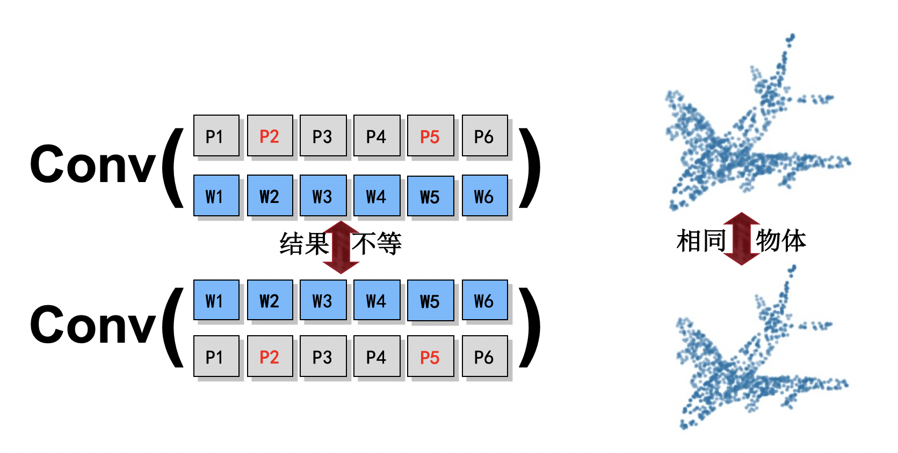

针对三维无序数据的卷积表示方法
蒋建文
3D数据表示是3D视觉中的重要且基本的过程，它在过去几年中被研究且提出了许多基于深度卷积神经网络（CNN）方法。然而大多数3D数据（例如点云，网格和视图）都是不规则且无序的。在这种情况下，实际上3D数据表示还需要置换不变性。 传统的3D数据表示方法采用经典的卷积或池化方法。经典的卷积可以更好地利用网格中表示的数据的空间局部相关性，但是可能导致形状信息的不当使用和数据顺序的不一致性。池化方法可以聚合局部特征并保持排列不变性，但是忽略局部区域中3D数据之间的相关性。 为了解决这个问题，我们提出了一种无序关系卷积（UR-Conv），它对无序3D数据应用了类似卷积的运算，并且对输入数据的顺序不敏感。在我们的方法中，捕获了数据之间的局部依赖性，这增强了模型的表示能力和鲁棒性。我们已将提出的方法应用于使用无序3D数据的3D形状分类和检索任务中，并与最新方法进行了比较。实验结果表明，我们的UR-Conv具有更好的性能和更好的鲁棒性。我们注意到UR-Conv可以使用不同的方式简单地集成到现有3D数据处理方法中。
图 1. 现有三维数据,例如点云，网格和视图,都存在一定程度的无序性，这也导致了在特征表示过程中，存在相关性挖掘和无序性保持的矛盾。

图 2. 以点云为例，因为无序性，同样的物体会在传统卷积中得到不同的结果。

图 3. UR-Conv在视图中的应用，对每张图片，排列其关联性最高的图片。可以看到对每张视图，其较高关联性的视图都与其存在较强的互补关系。